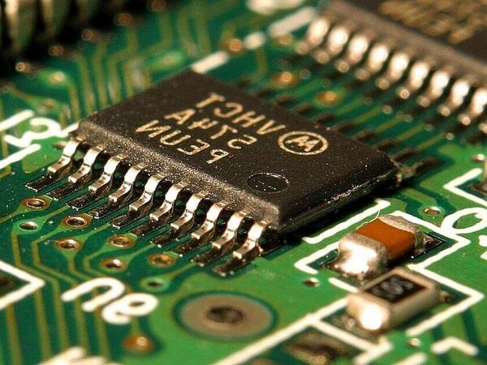
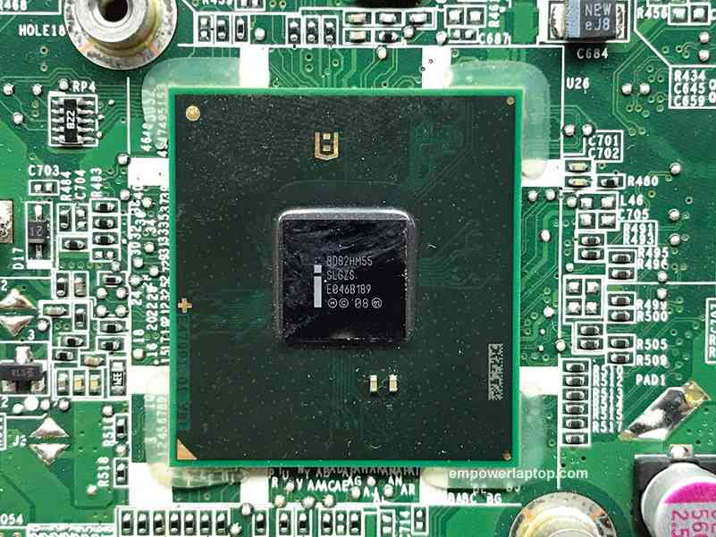

Chipset
Un chipset electrónico gestiona el flujo de datos entre los componentes de una tarjeta madre. Es el controlador de
tráfico entre CPU, Tarjeta Gráfica, RAM, almacenamiento y periféricos. Los expertos se han referido a él como el
"pegamento" de la tarjeta madre.
Es el controlador de tráfico entre CPU, Tarjeta Gráfica, RAM, almacenamiento y periféricos. Los
expertos se han referido a él como el "pegamento" de la tarjeta madre. El chipset es básicamente la parte
electrónica de la tarjeta madre que se comunica con todos los componentes conectados.
Como se ve el chipset:

